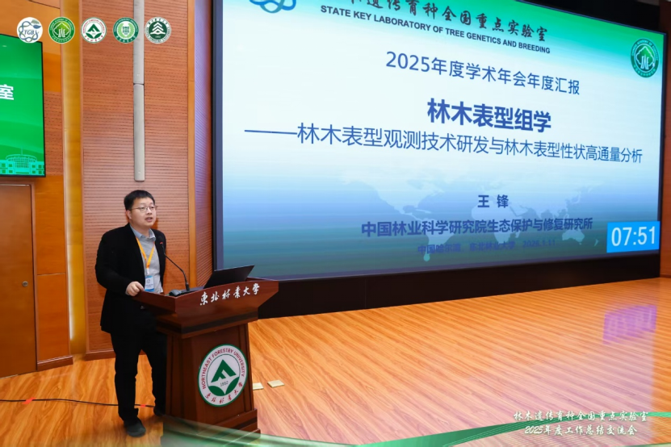
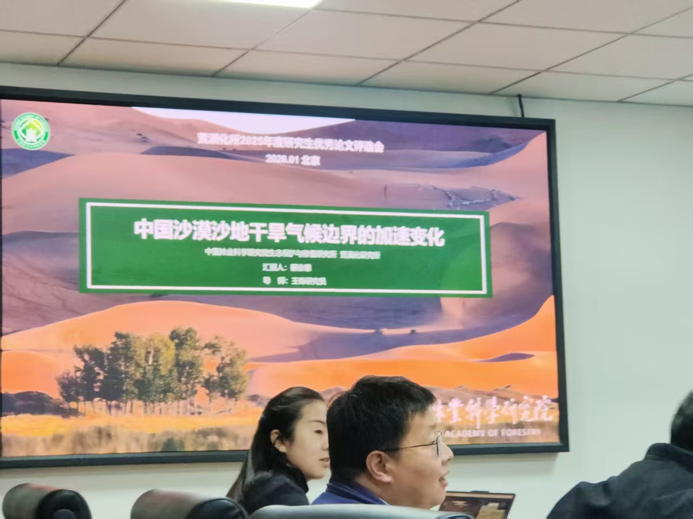
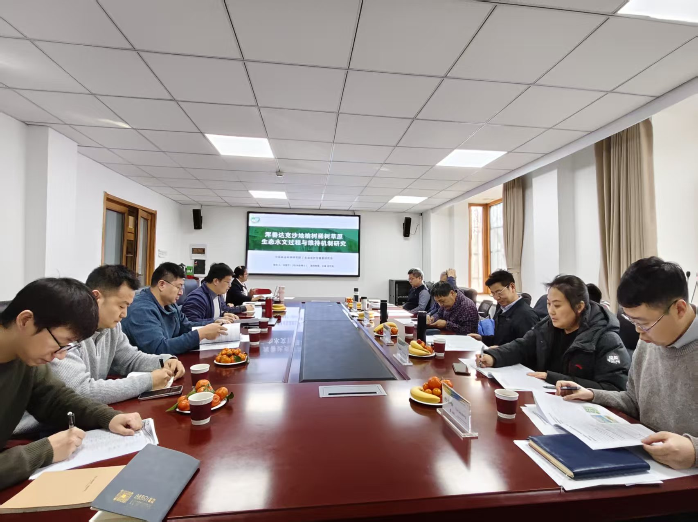
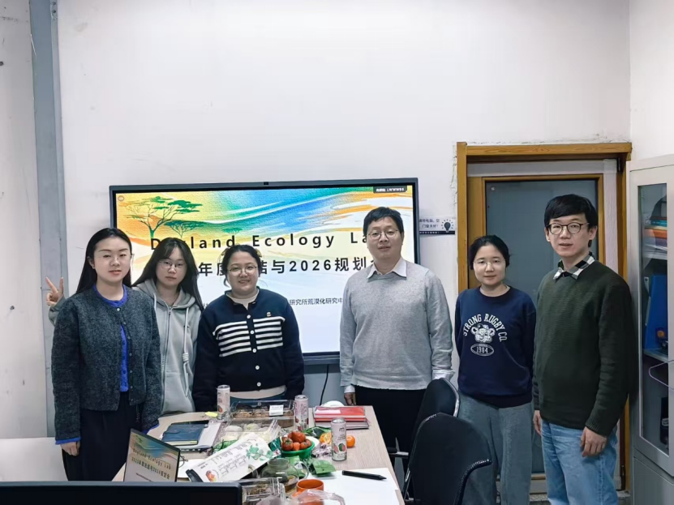
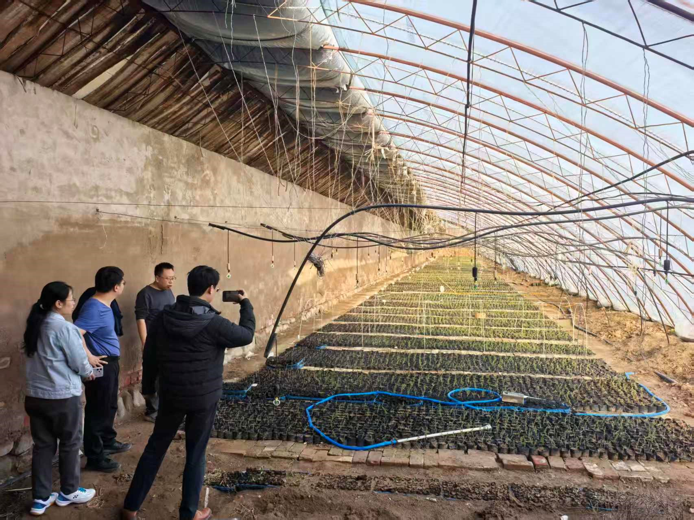
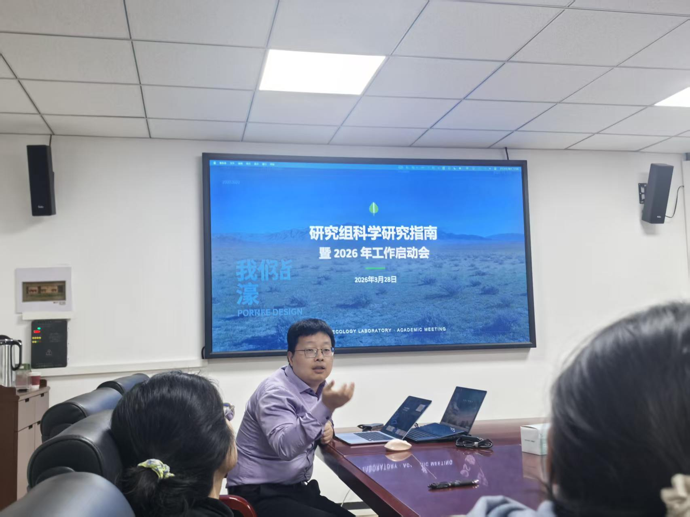

2026年1月9日-12日，课题组王锋研究员和博士后李敏前往东北林业大学参加林木遗传育种全国重点实验室2025年度工作总结交流会。会上，王锋研究员作为林木表型组学方向的IP，以《林木表型组学—林木表型观测技术研发与林木表型性状高通量分析》为题作年度汇报。
（作者：李敏；编辑：夏双双；审核：王锋；监制：王锋）

2026年1月27日，课题组成员博士生蔡依霏、硕士生夏双双参加荒漠化所2025年度学术年会，进行科研工作进展报告。分别以“中国沙漠沙地干旱气候边界的加速变化”、“基于无人机遥感的榆树稀树草原十年植被时空动态变化（2013-2023）”为题作汇报。蔡依霏同学获得了研究生优秀论文二等奖。
（作者：夏双双；编辑：夏双双；审核：刘莹子；监制：王锋）

2026年2月9日，课题组成员刘莹子于荒漠化所110会议室顺利完成2024级博士研究生学位论文开题报告会，以“浑善达克沙地榆树稀树草原生态水文过程与维持机制”为题进行报告。答辩专家从选题的科学性、研究方法的可行性、论文框架的合理性，以及论文大纲的逻辑性等方面对开题报告进行了全面、细致地评析。
（作者：刘莹子；编辑：夏双双；审核：李敏；监制：王锋）

2026年2月10日，课题组于中国林科院荒漠化所202办公室召开了2025年度总结与2026规划会，荒漠化所王锋研究员、课题组博士后李敏、博士后庄杰、博士生刘莹子、博士生蔡依霏、硕士生夏双双参加会议。参会人员分别汇报了2025年度科研成果、学习收获与成长感悟，为2026年制定短期、中期和长期发展目标，安排部署2026年研究与考察任务。
（作者：蔡依霏；编辑：夏双双；审核：刘莹子；监制：王锋）

2026年3月25-27日，课题组成员王锋研究员和博士生蔡依霏与清华同衡规划设计院程兆鹏主任规划师、生态所朱雅娟研究员，一行赴内蒙古乌海市开展实地调研工作。调研期间，团队通过召开座谈会、开展现场踏勘及走访调查等多种形式，系统了解了乌海市四合木资源保护现状及矿区生态修复进展情况，重点梳理了当前在保护管理机制、生态修复技术路径、资金投入及多方协同等方面存在的突出困难和问题。同时，调研组与乌海市自然资源局相关负责人进行了深入交流与研讨，就四合木保护与矿区修复工作的优化路径、政策支持及后续合作方向交换了意见，为下一步研究工作的深入推进奠定了良好基础。
（作者：蔡依霏；编辑：刘莹子；审核：李敏；监制：王锋）

2026年3月28日，Dryland Ecology Laboratory2026年工作启动会在中国林科院荒漠化所会议室顺利召开。会议中，博士后李敏、庄杰分别汇报了项目申报进展及未来工作计划；博士生刘莹子、蔡依霏以及即将毕业的硕士生夏双双分别就个人研究进展及2026年度规划进行汇报；新加入课题组的博士生陈雅轩与硕士生张浩然分别介绍了个人研究背景及未来科研计划；王锋研究员向课题组成员介绍了2026年度计划与科学研究指南，并作总结发言。本次启动会的顺利召开进一步凝聚了团队共识，明确了科研攻关方向，为各项工作的高效推进奠定了坚实基础。
（作者：刘莹子；编辑：刘莹子；审核：李敏；监制：王锋）